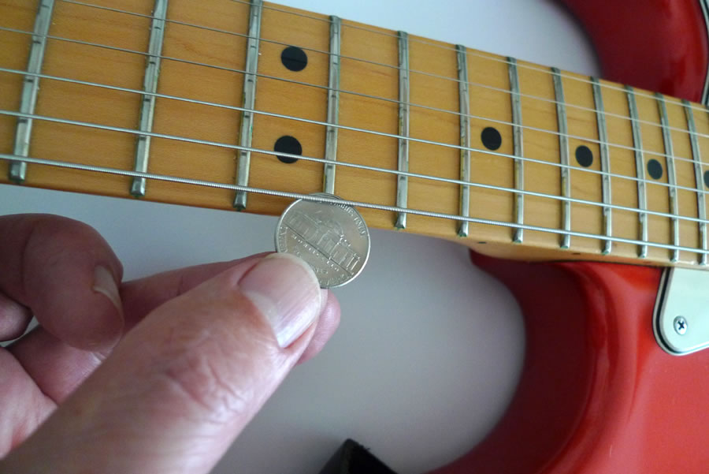
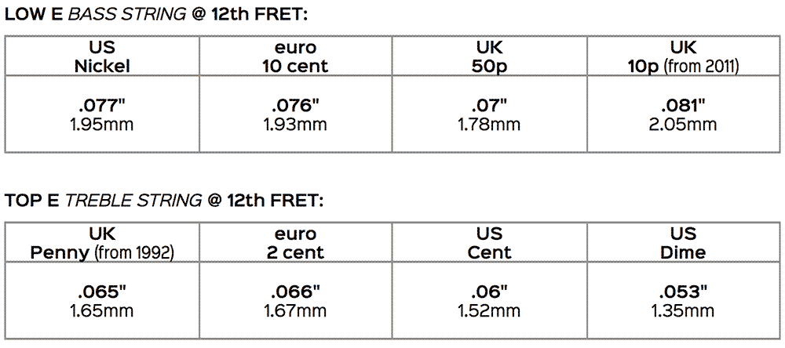

String Heights? - Coins can help Set the Action
How high should you set your electric guitar strings above the frets? Adjusting the action at the bridge isn't rocket surgery. And you don't need to measure string heights in thousandths using a feeler gauge, you're better off feeling the force. Using a coin to get the height of the top and bottom E strings at the 12th fret about right will give you a head start.
Try setting the height of the 6th string, the low E, to the thickness of a US nickel (.077" or 1.95mm) or a 10 cent euro coin (0.76" or 1.93mm) and feeling your way from there. Use new coins, older worn ones will of course be thinner. New UK 10 pence coins, slightly thicker since 2011, are also a good starting point (.081" or 2.05mm).
Set a smaller height for the 1st string, the top E, using a UK penny (.065" or 1.65mm) or US one cent (.06" or 1.52) and feel your way from there. If you like a lower action, try using a US dime (0.53" or 1.35mm).
The US Guitar store StewMac reckon an average bottom E string height at the 12th fret is 5/64" (.078" or 2mm), which is also the Fender standard for vintage necks, Gibson's standard and ESP's recommended minimum. Many guitarists prefer to set the bottom E higher than 5/64", particularly those who like to play hard and want to avoid string buzz, or who crave better tone.
StewMac suggest an average top E height at the 12th fret of 4/64" (.063" or 1.6mm) which is also Fender's advice, and ESP don't recommend going below 1.5mm, though Gibson's standard is 3/64" (.047" or 1.2mm) and many guitarists prefer to set the top E closer to 3/64th, fretboard and tone quality permitting.
Joe Satriani sets the action on his guitars extremely low, just over 2/64" (.032" or 0.8mm) top and bottom, but such a low action would not suit the playing style or tonal tastes of most guitarists even with a neck straight enough to tolerate it. Here are some more conventional preferences:
Guitarists' String Heights
| Top E | Low E | |
| Jeff Beck / Albert Collins | just over 3/64" / .047" / 1.2mm | 5/64" / .078" / 2mm |
| David Gilmour | 4/64" / .063" / 1.6mm | 5/64" / .078" / 2mm |
| Slash | 4/64" / .063" / 1.6mm | 4/64" / .063" / 1.6mm |
| Buddy Guy | 4/64" / .063" / 1.6mm | 9/64 / .14" / 3.6mm |
| Stevie Ray Vaughan | 5/64" / .078" / 2mm | 7/64" / .11" / 2.8mm |
| BB King | 7/64" / .11" / 2.8mm | 7/64" / .11" / 2.8mm |
| Eric Clapton | 1/8" / .125" / 3.2mm | 1/8" / .125" / 3.2mm |